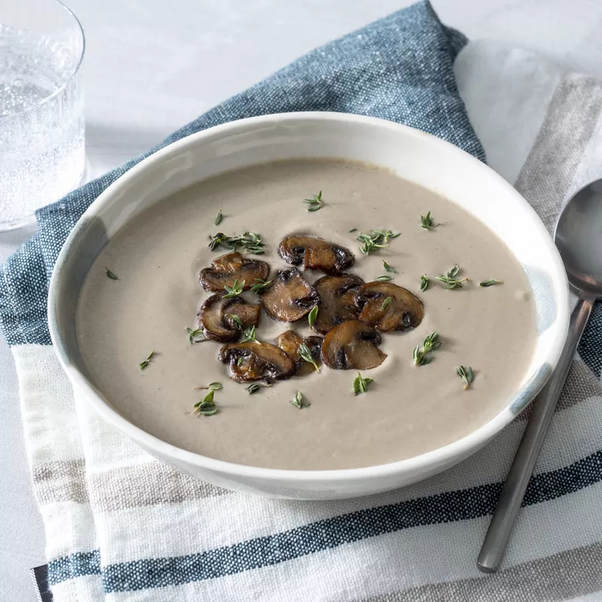

<body>
    <link rel="stylesheet" href="style.css">
</body>
<h1>Creamy Mushroom Soup</h1>
    
<h2>Description</h2>
    <p>Luscious, herb-infused mushroom soup is just a few steps away. You'll find the full recipe below with step-by-step
    instructions, but here's what you can expect when you make this top-rated recipe:</p>
    
    <p>Begin by melting butter in a large saucepan and caramelizing the mushrooms — it's important to cook them until a deep
    golden color is achieved for maximum flavor. Add onions, thyme, garlic, and broth to the mixture before simmering.</p>
    
    <p>Next, puree the soup mixture with an immersion blender and add cream. Season to taste, garnish with thyme sprigs, and
    enjoy a hot bowl of deeply decadent flavor.</p>
<h2>Ingredients</h2>
    <ul>
        <li>¼ cup unsalted butter</li>
        <li>2 (16 ounce) packages sliced fresh mushrooms</li>
        <li>1 pinch salt</li>
        <li>1 medium yellow onion, diced</li>
        <li>1 ½ tablespoons all-purpose flour</li>
        <li>6 sprigs fresh thyme, tied in a bundle with kitchen twine</li>
        <li>2 cloves garlic, peeled</li>
        <li>4 cups chicken broth, or more to taste</li>
        <li>1 cup water, or more to taste</li>
        <li>1 cup heavy whipping cream</li>
        <li>1 salt and freshly ground black pepper to taste</li>
        <li>1 teaspoon fresh thyme leaves for garnish, or to taste</li>
    </ul>
<h2>Steps</h2>
    <ol>
        <li>Melt butter in a large soup pot over medium-high heat. Sauté mushrooms and 1 pinch salt in the melted butter until
        mushrooms release their juices, 5 to 10 minutes.</li>
        <li>Reduce heat to medium-low and continue to cook, stirring often, until juices evaporate and mushrooms are caramelized, 15
        to 25 minutes. Set aside a few attractive mushroom slices for garnish later, if desired.</li>
        <li>Add onion to the mushrooms; cook until onion is soft and translucent, about 5 minutes.</li>
        <li>Stir flour into the mushroom mixture and cook, stirring often, to remove the raw flour taste, about 2 minutes.</li>
        <li>Add thyme bundle and garlic cloves, then pour in 4 cups chicken broth and 1 cup water. Reduce heat to low and simmer for
        1 hour. Remove and discard thyme bundle.</li>
        <li>Puree soup with an immersion blender until smooth and thick. Stir in cream. If too thick, add a little chicken broth or
        water. Season with salt and black pepper.</li>
        <li>Ladle into bowls, and garnish with reserved mushroom slices and thyme leaves.</li>
    </ol>